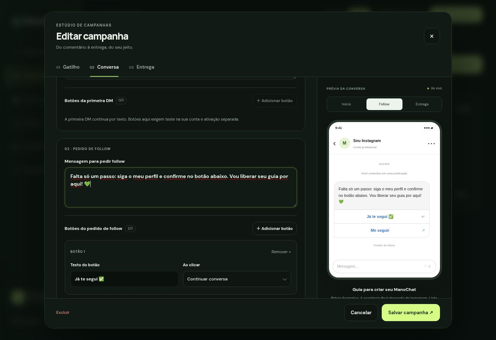

ManoChat Studio — atualização de 23/10/2026
Este é um pacote de ATUALIZAÇÃO, não uma instalação do zero. Foi preparado a partir do ZIP ManoChat-Atualizacao-GitHub.zip entregue em 10/10/2026. Se você alterou o projeto depois disso, compare essas alterações antes de substituir arquivos. Nada foi publicado no GitHub, na Cloudflare ou na Meta durante esta preparação.
O que está pronto
- Editor por etapas: Gatilho, Conversa e Entrega, com prévia ilustrativa da DM.
- De zero a três botões por mensagem, independentes em cada campanha. Texto de até 20 caracteres por botão.
- Pedido de follow: continuar a conversa ou abrir um endereço. Exemplo: “Já te segui ✅” e “Me seguir”.
- Entrega: abrir o link configurado, baixar o arquivo configurado ou abrir outro endereço.
- Primeira mensagem: suporte preparado, protegido por ativação separada; continua em texto por padrão. Leia a observação ao final.
- Visual clean/dark, novas escolhas com busca pela letra inicial e navegação por teclado, campos maiores, cartões responsivos e editor mobile em tela cheia.
- Proteção contra eventos repetidos, cliques simultâneos, botões removidos e botões de uma conversa anterior.
Campanhas existentes continuam sem botões até você adicioná-los. O código continua aceitando respostas digitadas. Abrir um link NÃO confirma follow nem avança automaticamente a conversa. O botão “Continuar conversa” consulta o perfil pela Meta antes de decidir a entrega.
1. Faça o backup antes da troca
1. No seu repositório GitHub, baixe o ZIP da versão atualmente funcionando. Guarde-o separado deste pacote.
2. Registre qual é o último commit funcionando, para conseguir voltar a ele.
3. Na Cloudflare, confira qual banco D1 está ligado ao Worker pelo binding `DB`. Guarde um backup/exportação do banco ou o ponto de recuperação disponível no seu plano.
4. Não envie tokens, senhas ou secrets pelo chat e não os coloque no GitHub.
Não há tokens reais, banco de contatos ou exportação de dados dentro deste pacote. O código mantém a marca ManoChat e as páginas institucionais que já existiam; ele não é a edição genérica para distribuição a outras pessoas.
2. Atualize apenas a estrutura nova do banco
Na Cloudflare, abra o banco D1 JÁ USADO pelo seu Worker e vá ao console de SQL. Abra `migrations/0005_campaign_buttons.sql` deste pacote, copie todo o conteúdo e execute no mesmo banco. São duas instruções CREATE TABLE IF NOT EXISTS. Se o console aceitar uma por vez, execute as duas, na ordem.
Esta migração cria `campaign_buttons` e `conversation_locks`. Não apaga, renomeia ou recria campanhas e contatos. Pode ser executada novamente. Não execute as migrações antigas de novo e não use DROP TABLE.
Para conferir no console:
```sql
SELECT name FROM sqlite_master
WHERE type='table' AND name IN ('campaign_buttons','conversation_locks');
```
Devem aparecer as duas tabelas. A atualização 0004, que você já usou para arquivos e etiquetas, continua sendo necessária para essas funções.
Se você usa migrações via Wrangler, a alternativa ao console é `npx wrangler d1 migrations apply NOME_DO_BANCO --remote`, usando o nome existente e conferindo antes a lista de migrações pendentes. Não aplique ambos os métodos sem conferir o histórico; se não usa terminal, prefira o console descrito acima.
3. Copie os arquivos para o projeto existente
Descompacte o ZIP. O conteúdo já está organizado para a raiz do repositório:
- `src/`: substitua os arquivos existentes e adicione `src/lib/buttons.js`.
- `public/`: substitua os arquivos existentes e adicione os novos `studio.css`, `ui.js` e `button-editor.js`.
- `migrations/`: adicione somente `0005_campaign_buttons.sql`, mantendo as anteriores.
- `tests/` e arquivos VERIFY: atualização dos testes e do registro de integridade.
- Este guia, `COMECE-AQUI.html`, `VALIDACAO.md` e `revisao/`: documentação e imagens; podem ficar na raiz, fora de public.
NÃO substitua seu `wrangler.toml`, `package.json` ou `package-lock.json`. Eles não foram incluídos neste ZIP, justamente para preservar os nomes, IDs, dependências e a configuração do seu projeto. Não exclua arquivos antigos do repositório. Não coloque uma pasta extra envolvendo src e public.
Pelo GitHub no navegador, a maneira de preservar as pastas é abrir o repositório, usar github.dev (tecla ponto), arrastar as pastas do pacote para a raiz no explorador do editor, aceitar a substituição dos arquivos correspondentes e conferir as alterações antes do commit. Se aparecer uma pasta única “ManoChat-Studio-Botoes-Mobile”, você arrastou a pasta externa: use seu conteúdo. Na área de controle de versão, registre o commit com a mensagem `Atualiza editor, botões e mobile`. No GitHub normal, o envio de pastas também pode ser feito por Add file → Upload files; confira a hierarquia antes de confirmar.
Mantenha o mesmo Worker, banco, bucket e endereço de webhook. Não precisa criar outro app da Meta nem refazer o login do Instagram.
4. Publique pelo processo que você já usa
Se seu Worker já está ligado ao repositório e publica a cada commit, aguarde a implantação concluir na Cloudflare. Se a publicação é manual, use o mesmo processo de antes. Não crie outro Worker. Confira o resultado da implantação e abra seu endereço atual.
Atualize a página sem cache se ainda aparecer a interface antiga. Faça login com a mesma senha. Em Campanhas, abra uma campanha e confira as três abas.
Se a mensagem “aplique a migração 0005” continuar aparecendo, confira se as duas tabelas foram criadas no banco ligado ao binding DB do Worker, não em outro banco ou ambiente.
5. Habilite os eventos de clique no app existente
Para botões do tipo “Continuar conversa”, a Meta precisa enviar o evento `messaging_postbacks` ao MESMO webhook que já recebe comentários e mensagens.
1. Abra o app Meta que você já configurou.
2. Na configuração dos campos de webhook do Instagram, localize `messaging_postbacks` e adicione sua assinatura.
3. Preserve `comments`, `messages` e quaisquer outros campos já assinados. Não troque o callback, verify token, access token, app secret ou versão da API.
4. Confira também a assinatura da conta profissional ao aplicativo. Se ela foi criada com uma lista explícita de `subscribed_fields`, a lista deve incluir `messaging_postbacks` E todos os campos existentes. Alterar só a lista do painel do app pode não atualizar uma assinatura de conta feita pela API.
5. Se essa opção não aparecer, ou a Meta pedir permissões diferentes, não refaça sua conexão. Mantenha as campanhas por texto e traga o nome da tela/erro, sem tokens, para analisar o seu caminho de integração.
Este pacote não executa nenhuma alteração de assinatura na Meta. Abrir um link é uma ação diferente de postback e não gera confirmação de follow por si só.
6. Configure uma campanha de teste
1. Duplique uma campanha e deixe a cópia pausada enquanto edita.
2. Use uma palavra exclusiva (por exemplo TESTEBOTAO) e uma publicação de teste. Evite sobrepor campanhas ativas para a mesma publicação/palavra.
3. Em Conversa, mantenha a primeira DM por texto: “Responda QUERO aqui para receber”.
4. Na mensagem de pedido de follow, adicione dois botões:
- Texto: “Já te segui ✅”. Ação: Continuar conversa.
- Texto: “Me seguir”. Ação: Abrir um link. Endereço: o link completo do seu perfil Instagram.
5. Em Entrega, mantenha seu link/arquivo e adicione um botão “Acessar conteúdo” com a ação correspondente.
6. Com botões, a mensagem inteira deve ter no máximo 640 caracteres. Na entrega, os links escritos no final também entram nesse limite. O sistema valida antes de salvar; evite links excessivamente longos.
7. Salve, ative só a campanha de teste e use outra conta do Instagram para comentar.
8. Confira a primeira DM. Responda QUERO para continuar. Sem seguir, toque em “Já te segui”: a entrega deve continuar bloqueada. Siga o perfil e toque novamente. A atualização de follow pode levar algum tempo na Meta.
9. Confira o conteúdo e o botão de entrega. Toque novamente: uma conversa já entregue não deve reenviar o material.
10. Abra Eventos e filtre pela campanha. Confira registros de entrega ou falha. Só depois repita a configuração nas campanhas principais.
“Ver resultados” continua mostrando etapas de entrega, não rastreamento de cliques em links, vendas ou garantia de leitura. Esta atualização não cria métricas de vendas.
7. Se algo não sair como esperado
- Não chegam cliques: confira `messaging_postbacks` tanto no app quanto na assinatura da conta. Uma resposta digitada continua sendo uma alternativa.
- Erro de mensagem com botões: reduza o texto, confirme até três botões e destinos válidos. Veja o erro em Eventos. O sistema não reenvia automaticamente outra primeira DM, para evitar duplicação e consumo da resposta privada permitida.
- Quer voltar para texto: remova os botões daquela mensagem e salve. Não precisa apagar a campanha ou mexer em tokens.
- Quer reverter toda a interface: volte ao commit/ZIP anterior e publique pelo mesmo processo. As duas tabelas adicionais podem permanecer no banco; a versão anterior as ignora. Não apague o banco e não restaure um backup de dados só para desfazer o visual.
- Se outros arquivos mudaram depois de 10/10, compare o código antes de aplicar este pacote. Não há como afirmar compatibilidade com alterações que não recebemos.
Primeira DM com botões: ativação avançada, separada
A documentação oficial confirma templates com até três botões na API de mensagens. A página de private replies apresenta a primeira resposta ao comentário por texto, sem confirmar claramente essa combinação de template + comment_id. Por isso a primeira DM permanece por texto por padrão.
Foi preparado o envio opcional de template na primeira DM por meio da variável de ambiente `META_PRIVATE_REPLY_BUTTONS_ENABLED=true`. Sem esse valor EXATO, o editor desabilita adicionar botões nessa etapa e o backend envia o texto original mesmo que haja uma configuração antiga de botões. Essa variável é nova e opcional; nenhum secret existente muda.
Não ative na campanha principal antes de verificar a aceitação pela Meta em uma publicação isolada e com contas que seguem e que não seguem o perfil. Não foi possível executar esse teste real aqui. Uma tentativa de private reply pode consumir a resposta permitida ao comentário; se falhar, não tente repetir nesse mesmo comentário. Use outro comentário de teste. Voltar a variável para false restaura a primeira DM por texto, mantendo os demais botões.
Validação e próxima etapa
33 testes automatizados passaram. O fluxo sem botões, arquivos, etiquetas, migração, autenticação do painel, assinatura do webhook, deduplicação e botões foram exercitados localmente. O visual foi revisado no navegador em desktop e em um viewport de 390 × 844 pixels, nos temas clean e dark. Arquivos de código novos passaram pela checagem de sintaxe.
Não houve teste real de envio na Meta, implantação em produção ou execução de migração no seu banco. Esse pacote não adiciona login Google nem a edição genérica para clientes; esses itens continuam como próximas etapas, depois desta atualização validada na sua conta.
Referências oficiais consultadas em 23/10/2026:
- https://developers.facebook.com/documentation/instagram-platform/instagram-api-with-instagram-login/messaging-api/button-template
- https://developers.facebook.com/documentation/instagram-platform/private-replies
- https://developers.facebook.com/documentation/instagram-platform/webhooks/fields
- https://developers.cloudflare.com/d1/best-practices/import-export-data/
- https://developers.cloudflare.com/d1/reference/time-travel/